① 宏观折叠 + 聚合统计 与设计目标最直接相关
项目群一屏折叠，折叠条上保留完成度 / 负载 / 风险统计。
Bryntum Gantt
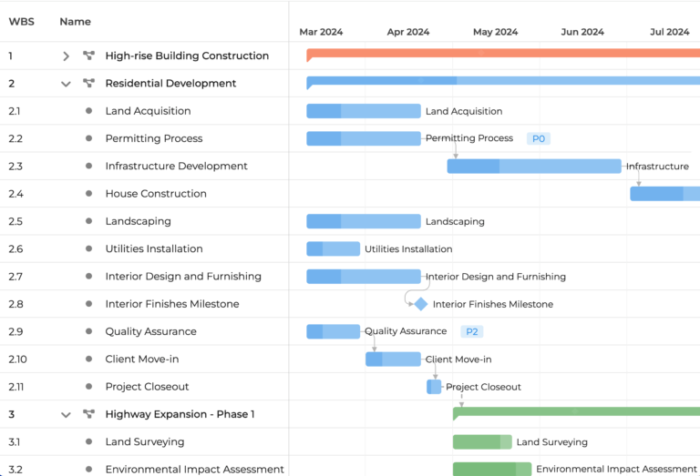
项目群组合甘特来源↗
- 三个项目一行一条，WBS 编号 + 项目色汇总条；子任务折叠仍显示条内进度深浅
- 里程碑菱形 + PO/P2 约束芯片 + 每条任务行尾名称标签
RD 「project=一行」的宏观密度 + 汇总条进度填充，是 riskdeck 层级时间线的直接模板。
dhtmlxGantt
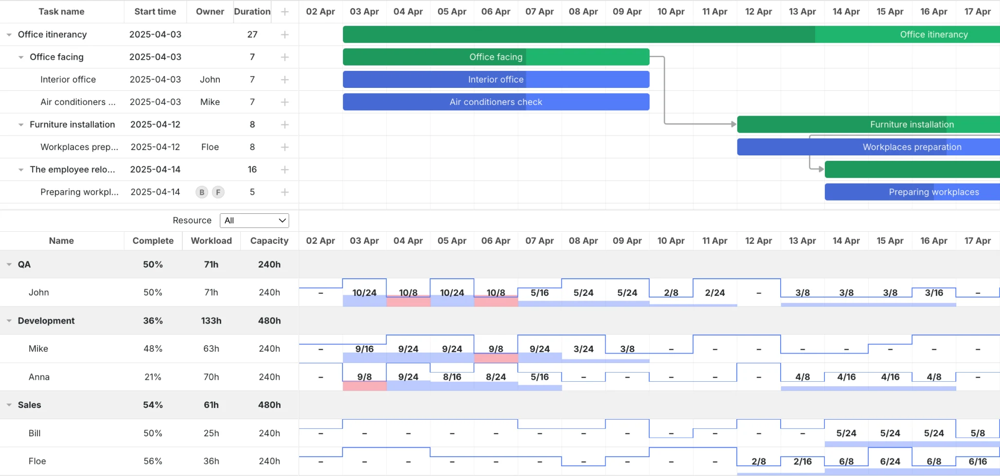
甘特 + 资源负载网格（分栏联动）来源↗
- 上半甘特、下半资源网格；分组行滚动汇总 Complete% / Workload / Capacity（QA 50%/71h/240h）
- 单元格「10/24」分子分母 + 红底超载、蓝底容量刻度
RD 「折叠组 + 组内滚动汇总」的教科书呈现；riskdeck 模块行可直接汇总 feature/interface 状态计数。
Bryntum Gantt
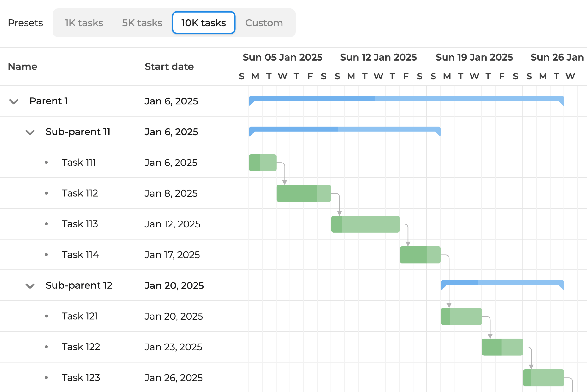
10K 任务 · 多级汇总条来源↗
- Parent / Sub-parent 两级折叠，深色段=完成比例，依赖链跨折叠层连接
- 万级任务下宏观条仍可读（性能与信息密度双证）
RD 证明「汇总条」方案在 interface 数千级时依然成立。
ClickUp
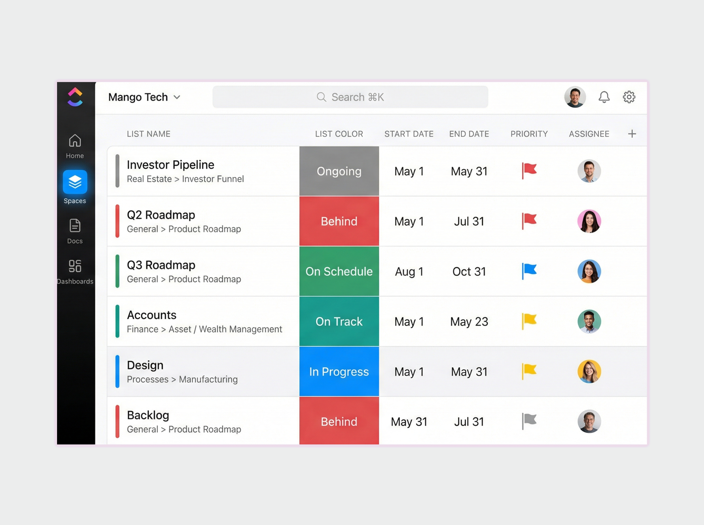
Portfolio 状态 rollup 列表来源↗
- 一行=一个项目：面包屑层级 + 整块状态色格（Behind/On Track/On Schedule…）+ 起止/优先级/负责人
- 状态色是"整格大色块"而非小圆点，远距离扫视极快
RD riskdeck 项目列表可直接套用：色格=里程碑健康度（四态映射），行尾加聚合数字列。
Azure DevOps
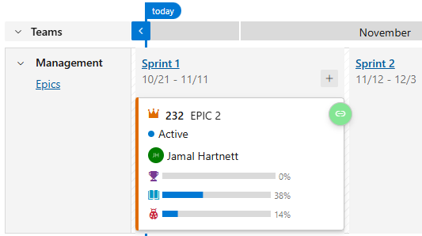
Delivery Plans · Epic rollup 卡片来源↗
- Epic 折叠为一张卡：卡内按字段分列多条进度条（0%/38%/14%）
- sprint 泳道 + 团队/Epics 树形分组
RD 「折叠卡内嵌多条微型进度条」：riskdeck 节点卡可按双轴状态（design×impl）各画一条。
OpenProject
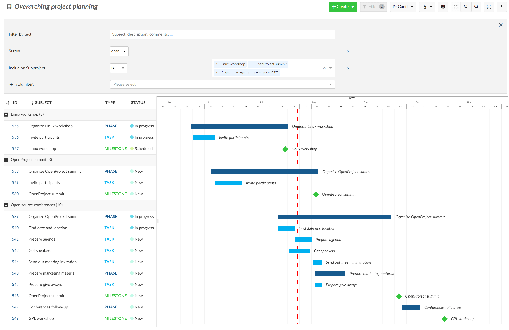
跨项目 overarching 时间线来源↗
- "Include projects"：项目行聚合子项目与里程碑成一条总览时间线
- 甘特与 work package 表格一体，折叠后父行延续 %/日期列
RD riskdeck 顶层"项目群总览行"=所有子项目时间范围+关键里程碑的机械聚合（图由数据推导）。
GanttPRO
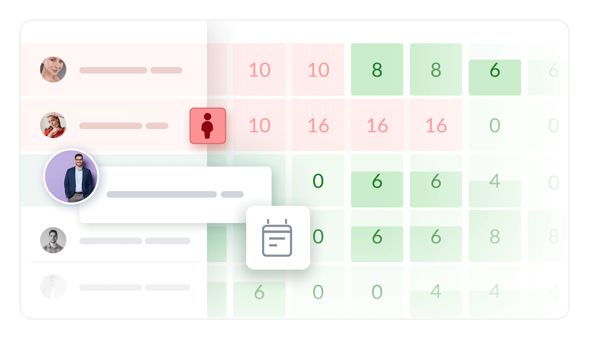
工作量热力图（行=人，列=天）来源↗
- 格内数字=工时，颜色绿(闲置)→红(过载)，一眼扫出瓶颈日
- 行首头像+姓名，行内整行即该人负载带
RD 同构变体：行=项目/模块、列=周、色=当日新增 at-risk/missed 数 → 风险密度热力。
② 时间线 · 里程碑 · 进度
甘特本体：汇总条进度、依赖、里程碑标记、深浅双主题。
Bryntum Gantt
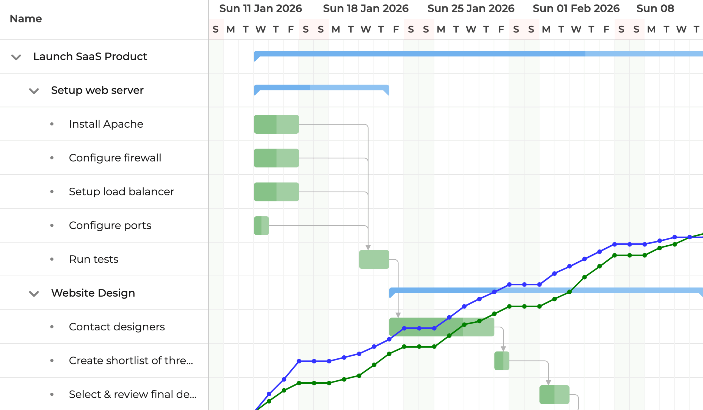
S 曲线叠加甘特（计划 vs 实际）来源↗
- 蓝=计划累计进度、绿=实际累计进度，两条 S 曲线直接画在甘特背景层
- 任务条内进度填充 + 依赖箭头；偏差与排期同屏对照
RD riskdeck 可用 events 里 impl 状态变更时间点重建「实际曲线」，计划曲线来自里程碑日期——不需要新采集。
Leantime
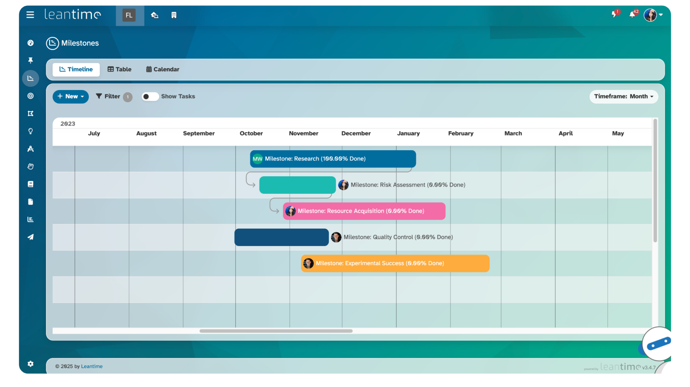
里程碑=聚合容器（内联完成度）来源↗
- 彩色里程碑条内联 "(100.00% Done)" 文字 + 负责人头像 chip + 依赖箭头
- "Show Tasks" 开关一键展开里程碑为任务；Timeframe 月/周/日/年切换
RD 与 riskdeck 里程碑四态最亲和：条尾文字可直接换成「✓ hit / ◐ at-risk + 2 天缓冲」。
腾讯 TAPD
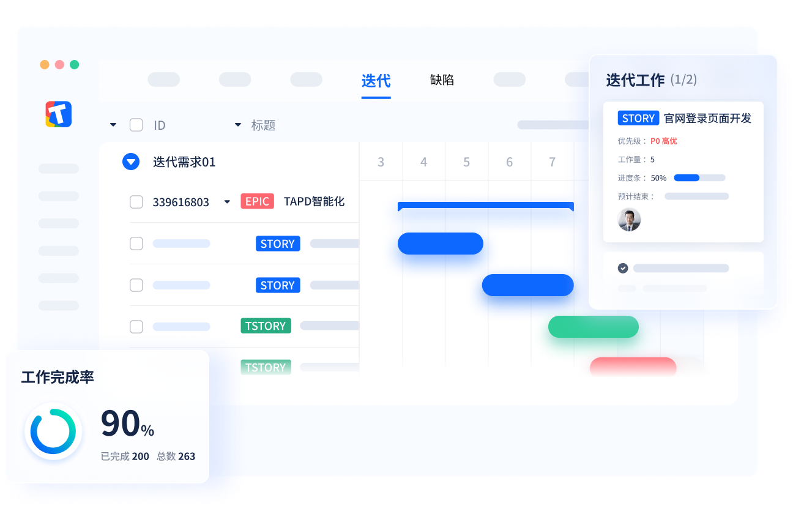
EPIC 折叠甘特 + 完成率环来源↗
- EPIC/STORY/TSTORY 三级标签折叠；汇总条「迭代需求01」+ 右侧卡片（P0/工作量/进度条 50%）
- 左下角悬浮 KPI 卡：工作完成率 90% 环（已完成 200 / 总数 263）
RD 「角落悬浮 KPI 卡」是低成本宏观微件：任何视图上叠一个完成率环即可。
dhtmlxGantt
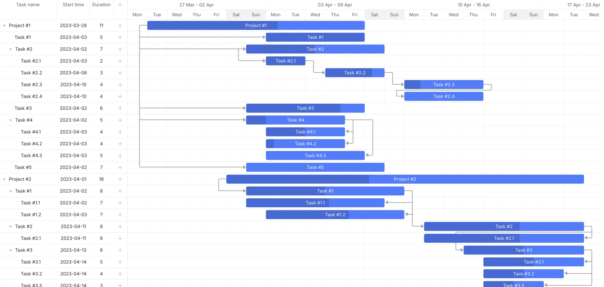
汇总条进度填充 · 浅色来源↗
- Project/Task 两级汇总条，条内深色段=完成度
- 叶子任务依赖链清晰，WBS 编号列
RD 折叠态宏观条必须携带微观进度的最小实现样例。
dhtmlxGantt
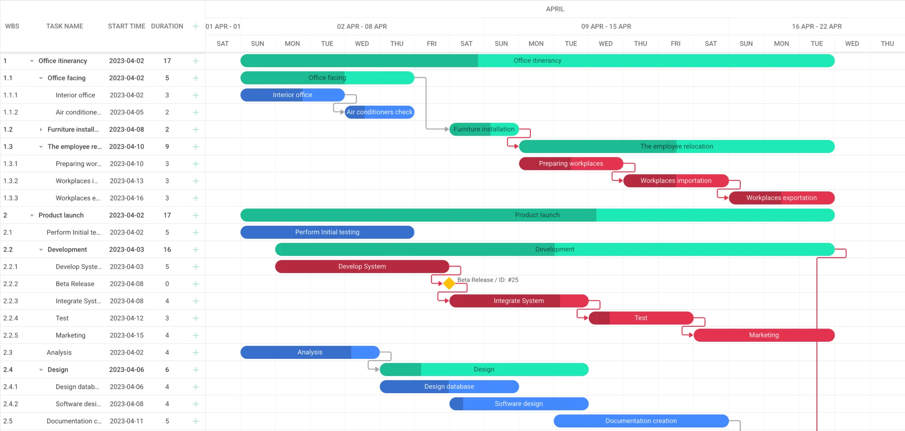
分组配色条 + 里程碑钻石 · 浅色来源↗
- 绿/青=分组汇总条（含进度填充）、蓝=任务条、黄钻=里程碑（Beta Release / ID: #25）
- 用条形颜色区分分组语义，折叠展开两种粒度同屏
RD riskdeck 里程碑四态（planned/at-risk/hit/missed）可用同一菱形四色表达。
dhtmlxGantt
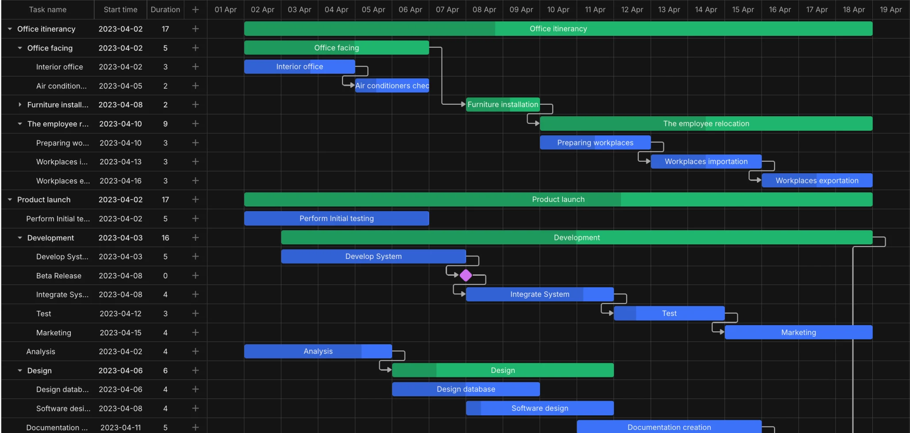
深色主题 · 依赖高亮来源↗
- 红色依赖线=关键链路告警路径的常用配色语言
- 折叠分组与跨组依赖同屏
RD 依赖边表渲染时，把「通往 at-risk 节点」的边染红即是风险传播视图。
③ 负载与风险
把「忙不过来」「要延期」变成颜色与位置编码。
TPG / MS Project
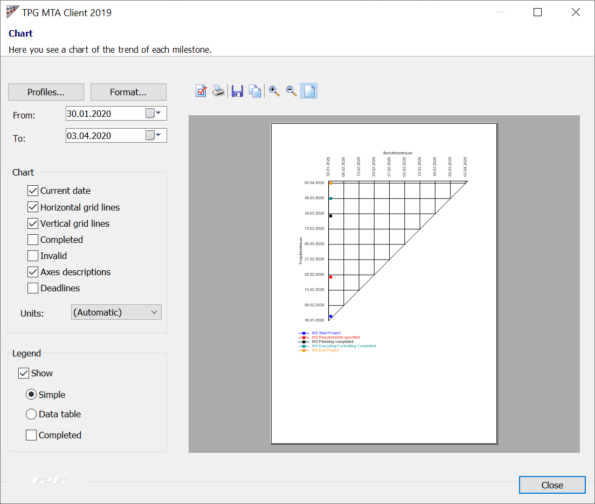
里程碑趋势分析 MTA来源↗
- x=报告期、y=里程碑预测日期；45°线=完成线，今日线竖切
- 点在线上方=里程碑后推（危险）、下方=提前、落线=完成；彩色点=各里程碑
RD 「计划被反复改动」本身就是风险信号；events 里的里程碑变更历史可直接重放成 MTA。
④ 趋势 · 预测 · 历史
回答「照当前速度，能不能按时做完」和「过去改过什么」。
TPG / MS Project
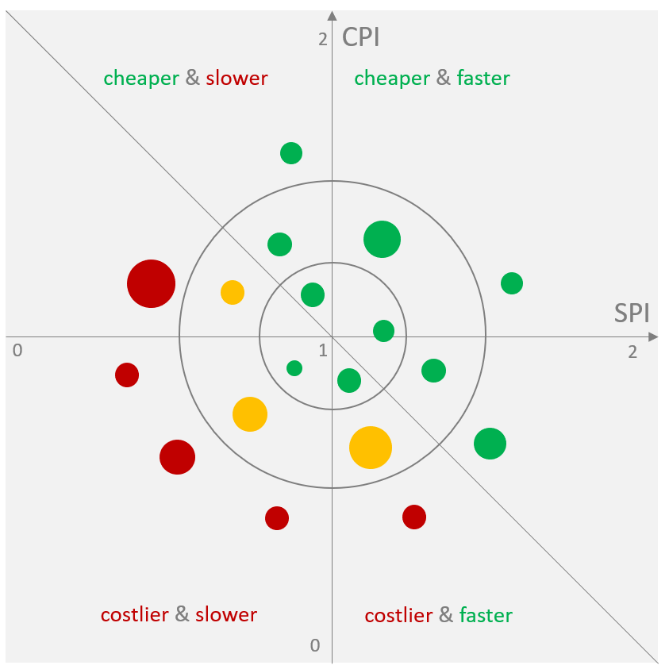
SPI/CPI 气泡象限图（组合一屏折叠）来源↗
- x=进度指数 SPI、y=成本指数 CPI，气泡大小=预算规模；绿/黄/红=健康分级
- 四象限文字直读结论（cheaper & faster…），同心环=目标容差带
RD 「多项目折叠成一张图」的极致形态；riskdeck 可用 (x=进度偏差, y=里程碑风险数) 做同构象限。
ClickUp
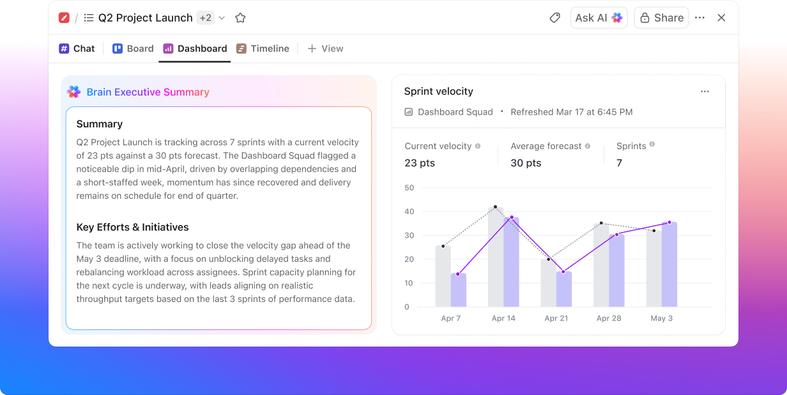
AI 执行摘要 + 速率预测仪表盘来源↗
- 左：自然语言项目健康摘要（谁落后了、为什么、接下来怎么办）
- 右：当前速率 23pts vs 预测 30pts，柱状+虚线预测，按 sprint 对比
RD 宏观页顶部「一句话健康结论 + 一张预测图」的版式范本；速率外推可基于 events 时间密度。
Bryntum Gantt
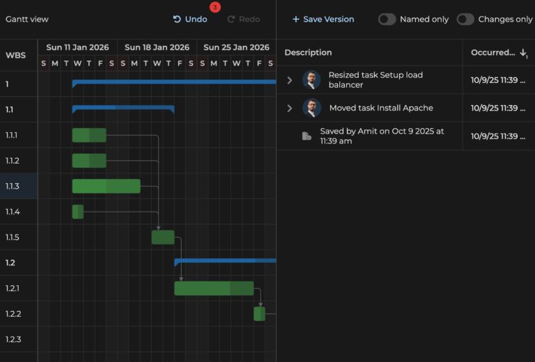
甘特 + 变更历史面板来源↗
- 右侧时间倒序流：Resized task… / Moved task… / Saved by Amit…，每条带精确时间戳
- Undo/Redo + 版本保存（Named only / Changes only 过滤）
RD 与 events.jsonl「只追加历史」理念同构：事件流升格为 UI 一等公民， timeline 页可直接复用。
⑤ 模式速查 详见同目录 pm-gantt-risk-views.md
里程碑趋势分析 MTA
把「计划被反复改动」变成预警曲线；45° 完成线
EVM 挣值 S 曲线
PV/EV/AC 三线 + SPI/CPI 指数；天然可层层加总
蒙特卡洛 S 曲线 + 龙卷风图
P10/P50/P90 概率承诺；先治哪个风险
风险矩阵 + 气泡图
概率×影响热力格计数；气泡=暴露值
燃尽 / 燃起 / CFD
能否按期清零；瓶颈与 WIP 膨胀
贡献热力日历
事件密度/风险密度年历；断档即停滞
treemap / sunburst / icicle
面积=工作量、颜色=健康度的层级折叠原型
语义缩放 / 多精度观察
zoomable treemap、overview+detail、汇总条、分级刻度
风险燃尽 + 行内 sparkline
折叠但保留统计的最小微件；列表即仪表盘